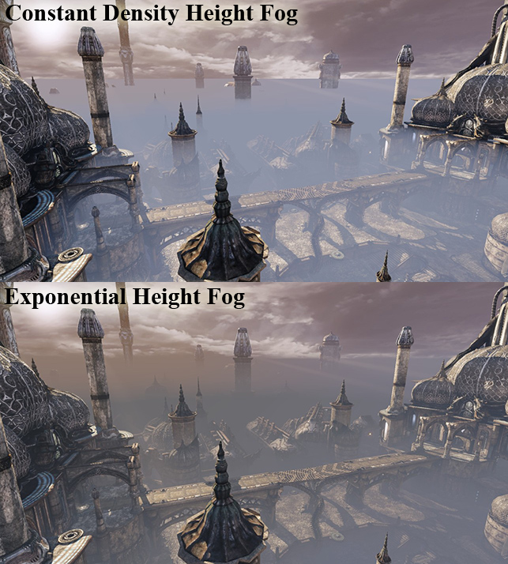
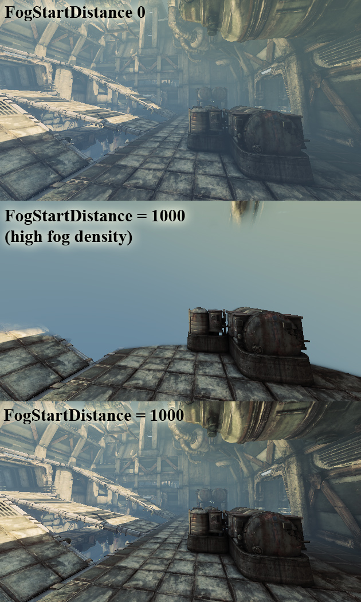

Height Fog
Overview
This document covers Height Fog and its uses. It assumes that you have a level already set up in which you would like to add Height Fog.
For more information on setting up a level, see the Creating Levels page.
Versions
The one layer version of height fog was added in QA_APPROVED_BUILD_JUNE_2007. Before that, the four layer version was always used and there was no performance benefit to using less than four layers.
Using Height Fog
In the Actor tab of the Generic Browser, select the HeightFog Actor, which is under Info. Right-click in the world and select Add HeightFog Here. Open the HeightFog Properties by either double-clicking the Actor; right-clicking on the newly-placed Actor and select Properties; or pressing F4.
Positioning the HeightFog Actor will determine the height of the HeightFog.
Height Fog Properties
In the Height Fog section you can edit the following properties related to the component:
- Density - affects the scale for the fog layer's thickness
- Extinction Distance - the distance at which light passing through the fog is 100% extinguished
- Light Brightness - affects the inscattering color
- Light Color - fog color blended with the scene
- Start Distance - the distance at which fog starts affecting the scene
Animating Height Fog
To animate Height Fog, use Matinee to animate the HeightFog Actor values. For more information, see the Matinee User Guide page.
Color
Height Fog Color is now able to be changed at runtime using the Color Property Track in Matinee. Here’s how to set up Matinee to let you change Height Fog Color in-game:
- Create a HeightFog Actor.
- Create a group in Matinee with that Actor attached.
- Create a color property track in the above group.
- A dialog should appear letting you choose which color property to interpolate. There should be only one option since the HeightFog Actor has only one property that is a color.
- Once that track is set up, you can place keyframes and use the context menu (right-click) or the Curve Editor to set the color for each key.
Interaction with transparency
Transparency can't be handled during the main fog pass so it is a special case. Fog on transparent objects is calculated per-vertex, which means that transparent meshes need to be reasonably tessellated to look right. Materials using modulative blending can't be fogged, unless they are decal materials.
Performance implications
Height Fog is rendered with a full screen pass blended onto the scene color. There is a one layer version and a four layer version. These are applied based on how many HeightFog Actors exist in the level, so if there is only one actor the one layer version will be used. The four layer version takes about twice as long to render as the one layer version, so use just one HeightFog Actor if possible. There is also a small performance gain to be had from setting the Start Distance so that nearby objects in the world are not fogged at all.
Volumetric Fog
Use FogVolumes to have localized fog effects. This feature can also be faked by using sheets of unlit translucency and special materials. See the Volumetric Lighting Guide for information on setting up a volumetric lightbeam.
Exponential Height Fog
The May QA build has a new type of global fog called Exponential Height Fog. You place these in your level just like normal height fog actors (found under 'Actor Classes' -> 'Info'), but the rendering behavior is different. Exponential Height Fog creates more density in low places of a map and less density in high places. The transition is smooth so you never get a hard cutoff like the existing constant density height fog does. Exponential Height Fog also provides two fog colors, one for the hemisphere facing the dominant directional light (or straight up if none exists), and another color for the opposite hemisphere.
Here's VCTF-Necropolis with the existing constant density height fog and Exponential Height Fog, using different colors for the hemisphere facing the light and the opposite:

Performance
The rendering cost of Exponential Height Fog is similar to two layers of constant density height fog with an additional optimization:
The FogStartDistance can be used to artificially keep some defined area in front of the viewer without fog. This also helps performance as pixels can be culled by the z buffer.
The following images show this applied:

Depending on the scene content and when using a far fog start distance the rendering cost can be 50% or less.
This optimization is implemented by rendering a full screen quad that has a z value and depth test enabled.
The following two console variables allow to overwrite the editor settings: FogStartDistance, FogDensity
They are helpful to test existing levels and to find a good start distance. Use the ? as parameter to get more help.
Important!
You are viewing documentation for the Unreal Development Kit (UDK).
If you are looking for the Unreal Engine 4 documentation, please visit the Unreal Engine 4 Documentation site.